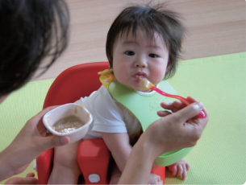

当院は、来院していただいたお子さまとご家族に少しでも安心して いただくことを、心がけています。
笑顔のない日はありません。なんでもご相談ください。
乳児・幼児・小児の栄養学的面からのアドバイス
20 年前から、小児生活習慣病（小児肥満）対策の勉強をしており、福岡市医師会でも同様の仕事をしています。
最近では乳幼児の栄養にも取り組んでおり、離乳食・幼児食ｱﾄﾞﾊﾞｲｻﾞ―（母子栄養協会認定）を取得しています。

診療案内
当院の特色
小児肥満症・小児メタボリックシンドロームの診断・治療
生活習慣病は、がん、心筋梗塞、糖尿病、認知症など様々な病気を引き起こすことが わかってきました。それは成人期の問題でなく、起源は、胎児のやせ、幼児期、小児、 思春期と続く肥満によって起こってきます。
小児にも病気の単位となる肥満「小児肥満症」と動脈硬化の素因が重なる「小児メタ ボリックシンドローム」の診断基準があります。当院では、それを正しく診断し、そ の後の治療に繋げます。初診は来院のみとしますが、このコロナ禍に応じて、再診は オンライン診療も可能です。是非ご相談ください。
また最近思春期やせをみかけることが多くなりました。
重症では、不整脈など命にかかわる場合があります。初期に気づかなければ、軽快し にくいことが言われています。お子様の急激なやせ、食行動の異常を認められた場合 は、一度受診をお勧めします。必要な場合は、専門医療機関に紹介いたします。
舌下免疫療法
ダニやスギに対するアレルギーのお子様は、増加の一途ですが、根本的な体質改善の ための舌下免疫療法を行っています。（小学生以上）
● 夜尿症の相談も行っています ●お気軽にご相談ください